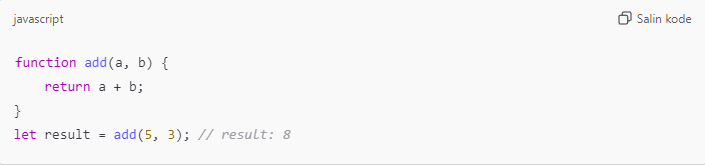
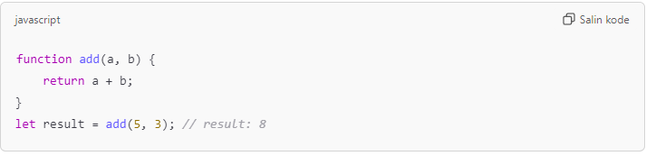
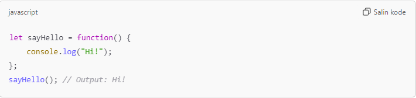
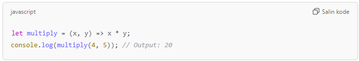
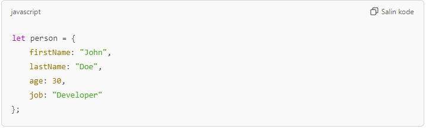
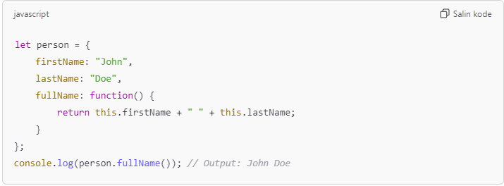

JavaScript adalah bahasa pemrograman yang digunakan untuk membuat halaman web interaktif. JavaScript memungkinkan Anda untuk menambah fitur dinamis seperti animasi, form interaktif, dan banyak lagi pada halaman web.
1. Interaktif: JavaScript memungkinkan halaman web untuk berinteraksi dengan pengguna (misalnya, menampilkan pesan atau melakukan aksi saat pengguna mengklik tombol).
2. Dijalankan di Browser: JavaScript dijalankan langsung di browser pengguna, sehingga tidak memerlukan server khusus.
3. Mudah Dipelajari: JavaScript relatif mudah dipelajari dan digunakan.
JavaScript ditempatkan di dalam halaman HTML dan dijalankan oleh browser. Biasanya ditulis dalam tag (<)script(>) dalam file HTML, atau dalam file terpisah dengan ekstensi .js
1. Validasi Formulir: Memeriksa input pengguna sebelum data dikirim ke server.
2. Manipulasi DOM: Mengubah elemen HTML setelah halaman dimuat.
3. Animasi dan Efek: Menambahkan efek visual seperti sliding atau fading.
1. Mulai dengan Dasar-Dasar JavaScript: Jika Anda baru memulai dengan JavaScript, Anda harus mempelajari dasar-dasar terlebih dahulu. W3Schools menyediakan tutorial yang mudah diikuti mulai dari konsep-konsep dasar seperti variabel, fungsi, dan operator.
2. Pelajari HTML dan CSS: JavaScript digunakan untuk membuat halaman web lebih dinamis, jadi Anda harus memahami HTML (struktur halaman web) dan CSS (desain halaman web).
3. Fokus pada Penggunaan JavaScript di Browser: JavaScript terutama digunakan untuk membuat halaman web interaktif. Anda akan belajar bagaimana menggunakan JavaScript untuk manipulasi DOM (Document Object Model), mengubah elemen halaman secara dinamis.
4. Bergabung dengan Komunitas: Mencari dukungan dan berbagi pengalaman di forum atau grup komunitas dapat sangat membantu.
5. Praktikkan dan Bangun Proyek Sendiri: Cara terbaik untuk belajar adalah dengan praktik langsung. Cobalah untuk membangun aplikasi web kecil untuk memahami bagaimana JavaScript bekerja di dunia nyata.
Menampilkan kotak dialog dengan pesan. Contoh: alert("Halo, Dunia!");
Menulis output langsung ke halaman HTML. Contoh: document.write("Selamat datang!");
Menampilkan output di konsol browser (untuk debugging). Contoh: console.log("Ini pesan di konsol");
Statements adalah perintah atau instruksi yang memberi tahu komputer apa yang harus dilakukan. Di JavaScript, setiap baris kode yang dieksekusi adalah sebuah statement.
Statement yang menghasilkan nilai (ekspresi). Contoh: let x = 5 + 3;
Statement yang mendeklarasikan variabel. Contoh: let x;
Mengontrol alur eksekusi program, seperti if, else, for, while, dll. Contoh: if (x > 5) {console.log("x lebih besar dari 5");}
Mendeklarasikan fungsi untuk digunakan di tempat lain dalam kode. Contoh: function myFunction() {console.log("Hello World");}
Menghentikan eksekusi fungsi dan mengembalikan nilai. Contoh: function add(a, b) {return a + b;}
Aturan penulisan (syntax) di JS harus diikuti agar kode dapat dijalankan dengan benar.
Nama variabel atau fungsi harus konsisten dalam penggunaan huruf besar dan kecil. Contoh: let x = 5; let X = 10; // x dan X adalah variabel berbeda
JavaScript dijalankan dalam bentuk pernyataan (statements), yang biasanya diakhiri dengan titik koma (;). Contoh: let a = 5; let b = 10;
Anda bebas menambahkan spasi atau baris baru untuk memperjelas kode. Contoh: let sum = 5 + 10; // Masih valid
Blok kode digunakan untuk mengelompokkan beberapa pernyataan, biasanya dalam fungsi atau kontrol alur. Contoh: if (true) {console.log("Hello, world!");}
Tambahkan komentar untuk menjelaskan kode. Contoh: // Ini komentar & /* Ini komentar beberapa baris */
Gunakan let, const, atau var untuk mendeklarasikan variabel. Contoh: let x = 5; const y = 10;
Komentar digunakan untuk memberi catatan di dalam kode. Komentar tidak dijalankan oleh browser dan berguna untuk menjelaskan kode atau menonaktifkan bagian kode saat debugging.
Menggunakan // di awal. Contoh: // Ini adalah komentar satu baris
Menggunakan /* di awal dan */ di akhir. Contoh: /* Ini adalah komentar beberapa baris */
Mempermudah memahami kode & Menonaktifkan kode sementara.
Variabel digunakan untuk menyimpan nilai data. Variabel memungkinkan pengembang mengelola dan memanipulasi data dalam kode.
Digunakan sebelum ES6 untuk mendeklarasikan variabel. Contoh: var x = 5;
Digunakan untuk variabel yang nilainya dapat berubah. Contoh: let y = 10;
Digunakan untuk variabel yang nilainya tetap (tidak dapat diubah). Contoh: const z = 15;
1. Harus dimulai dengan huruf, $, atau _.
2. Tidak boleh menggunakan kata kunci JavaScript.
3. Case-sensitive (huruf besar dan kecil dianggap berbeda). Contoh: myVariable dan myvariable adalah variabel yang berbeda.
Variabel let dalam JavaScript digunakan untuk mendeklarasikan variabel dengan cakupan blok (block scope). Ini adalah cara modern yang lebih aman dibandingkan var.
Variabel let hanya dapat diakses dalam blok tempat ia dideklarasikan (di antara {}). Contoh: {let x = 10; console.log(x); // Bisa diakses di sini} console.log(x); // Error, x tidak dideklarasikan di luar blok
Tidak boleh mendeklarasikan ulang variabel dengan nama yang sama dalam cakupan yang sama. Contoh: let x = 10; let x = 20; // Error
Nilai variabel let bisa diperbarui. Contoh: let x = 10; x = 20; // Tidak masalah
Gunakan let jika nilai variabel perlu diubah di kemudian waktu. Untuk variabel tetap, gunakan const.
Variabel const dalam JS digunakan untuk mendeklarasikan variabel dengan nilai tetap (konstan).
Setelah variabel dideklarasikan, nilainya tidak dapat diubah. Contoh: const x = 10; x = 20; // Error
Harus Diinisialisasi Saat Deklarasi. Contoh: const y; // Error y = 15;
Sama seperti let, variabel const hanya bisa diakses dalam blok tempat ia dideklarasikan. Contoh: { const z = 30; console.log(z); // Bisa diakses } console.log(z); // Error
Meskipun nilai primitif tidak bisa diubah, properti objek atau elemen array yang dideklarasikan dengan const masih bisa dimodifikasi. Contoh: const person = { name: "John" }; person.name = "Doe"; // Tidak masalah const numbers = [1, 2, 3]; numbers.push(4); // Tidak masalah
Gunakan const jika nilai variabel tidak akan berubah sepanjang kode. Untuk nilai yang bisa berubah, gunakan let.
Operator dalam JavaScript yaitu simbol atau kata kunci yang digunakan untuk melakukan operasi pada nilai atau variabel.
Digunakan untuk perhitungan matematika. Contoh: +, -, *, /, % (modulus), ** (pangkat).
Digunakan untuk memberikan nilai ke variabel. Contoh: =, +=, -=, *=, /=, %=.
Membandingkan dua nilai dan menghasilkan boolean (true atau false). Contoh: ==, ===, !=, !==, >, <, >=, <=.
Digunakan untuk operasi logika. Contoh: && (AND), || (OR), ! (NOT).
Digunakan untuk menggabungkan string. Contoh: +.
Digunakan untuk memeriksa atau mengubah tipe data. Contoh: typeof, instanceof.
- Ternary Operator (? :): Untuk kondisi singkat. Contoh: let result = (5 > 3) ? "Yes" : "No"; // Hasil: "Yes"
- Spread Operator (...): Untuk menyebar elemen array/objek.
Operator aritmatika dalam JavaScript digunakan untuk melakukan operasi matematika pada angka.
Di gunakan untuk menambah 2 angka. Contoh: let x = 5 + 3; // x = 8
Di gunakan untuk mengurangkan 2 angka. Contoh: let x = 5 - 3; // x = 2
Di gunakan untuk mengalikan 2 angka. Contoh: let x = 5 * 3; // x = 15
Di gunakan untuk membagi 2 angka. Contoh: let x = 5 / 2; // x = 2.5
Mengembalikan sisa pembagian. Contoh: let remainder = 7 % 2; // Hasil: 1
Menghitung pangkat. Contoh: let power = 2 ** 3; // Hasil: 8
Inkrement (++): Menambah 1 ke nilai variabel.
Dekrement (--): Mengurangi 1 dari nilai variabel.
Operator penugasan dalam JavaScript digunakan untuk menetapkan nilai ke variabel.
Menetapkan nilai ke variabel. Contoh: let x = 10; // x menjadi 10
Menambahkan nilai ke variabel dan menetapkan hasilnya. Contoh: let x = 10; x += 5; // x menjadi 15
Mengurangi nilai dari variabel dan menetapkan hasilnya. Contoh: let x = 10; x -= 3; // x menjadi 7
Mengalikan nilai variabel dengan angka lain dan menetapkan hasilnya. Contoh: let x = 5; x *= 2; // x menjadi 10
Membagi nilai variabel dengan angka lain dan menetapkan hasilnya. Contoh: let x = 10; x /= 2; // x menjadi 5
Menghitung sisa pembagian dan menetapkan hasilnya. Contoh: let x = 10; x %= 3; // x menjadi 1
Menghitung pangkat dan menetapkan hasilnya. Contoh: let x = 2; x **= 3; // x menjadi 8
Operator penugasan mempermudah manipulasi nilai variabel dalam kode.
Tipe data dalam JavaScript digunakan untuk menyimpan berbagai jenis nilai.
Teks yang dikelilingi tanda kutip ("" atau ''). Contoh: let text = "Hello";
Angka (baik bilangan bulat maupun desimal). Contoh: let x = 42; let y = 3.14;
Hanya memiliki dua nilai: true atau false. Contoh: let isJavaScriptFun = true;
Struktur data kompleks yang menyimpan pasangan kunci-nilai. Contoh :let isJavaScriptFun = true;
Tipe data khusus yang menyimpan daftar nilai. Contoh: let colors = ["red", "blue", "green"];
Variabel yang dideklarasikan tetapi belum memiliki nilai. let x; // undefined
Tipe data dengan nilai kosong. let y = null;
Fungsi dalam JavaScript yaitu blok kode yang dirancang untuk menjalankan tugas tertentu. Fungsi membantu mengorganisasi dan mengulang kode dengan mudah.
Gunakan kata kunci function, diikuti oleh nama fungsi, tanda kurung, dan blok kode.
function myFunction() { console.log("Hello, World!"); }
Fungsi dijalankan dengan menulis nama fungsinya diikuti tanda kurung.
myFunction(); // Output: Hello, World!
Parameter: Variabel yang dideklarasikan di dalam tanda kurung saat fungsi dibuat.
Argumen: Nilai yang diberikan saat fungsi dipanggil.

Gunakan return untuk mengembalikan hasil dari fungsi.

Fungsi tanpa nama, biasanya digunakan dalam ekspresi atau callback.

Cara singkat untuk menulis fungsi.

Objek dalam JavaScript digunakan untuk menyimpan koleksi data dan properti (kunci-nilai).
Objek dibuat dengan menggunakan tanda kurung kurawal {}. Properti ditulis dalam pasangan kunci: nilai, dipisahkan dengan koma.

console.log(person.firstName); // Output: John
console.log(person["lastName"]); // Output: Doe
person.country = "USA";
person.age = 31;
delete person.job;
Method adalah fungsi yang menjadi properti objek.

- Objek mempermudah pengelolaan data yang kompleks.
- Gunakan this dalam metode untuk merujuk ke properti objek saat ini.
- Objek sering digunakan sebagai dasar untuk pemrograman berbasis objek (OOP) dalam JavaScript.